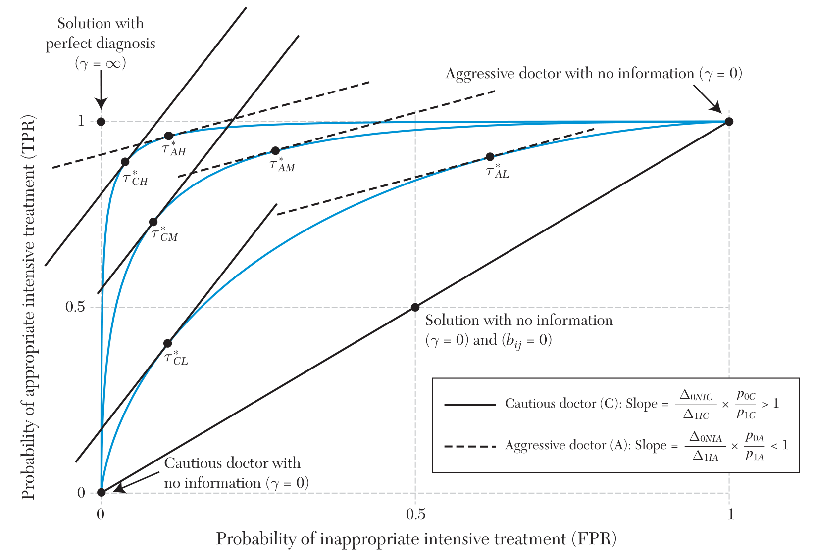

TPR - FPR 差值越大，两类患者结局都改善
基于 Currie, MacLeod & Musen (2026) 综述论文，系统梳理近年来经济学界关于医生诊断技能、决策阈值、实践风格差异及其对患者结局影响的研究进展。
论文构建了一个融合诊断技能、操作技能、医生信念、激励机制和患者池差异的统一模型框架，用以分析医生决策行为的变异来源。
患者 i 就诊于医生 j，医生在两种治疗之间选择：非密集治疗 (t = NI) 或密集治疗 (t = I)。患者的真实状态 αi ∈ {L, H}，低风险患者适合非密集治疗，高风险患者适合密集治疗。
医生 j 对类型 α 的患者选择治疗 t 的期望效用为：
其中 uαtj 是对患者的医学效益（取决于操作技能），δtj 捕捉非医学因素（报酬、偏好等），δNIj = 0 为标准化。当 δIj < 0 时，医生偏好非密集治疗或受到抑制密集治疗的激励。
医生基于含噪声的信号进行诊断：
其中 ε ~ N(0,1)，γj 是诊断技能。γj 越高，信号方差越小，误诊概率越低。美国国家科学院指出，诊断错误影响 5% 的门诊患者，导致 10% 的患者死亡。
医生效用最大化的决策阈值为：
其中：
决策阈值取决于：诊断技能 γj、治疗相对有效性 ΔLNIj/ΔHIj、以及医生对患者类型比例的先验信念 pLj/pHj。
诊断质量用两个指标衡量：

TPR 为真阳性率（高风险患者正确获得密集治疗的概率），FPR 为假阳性率（低风险患者错误获得密集治疗的概率）。ROC 曲线上不同点对应不同决策阈值，曲线位置高低反映诊断技能。
激进型医生 (A/"cowboy")：bA < 0，更倾向密集治疗。
保守型医生 (C/"comforter")：bC > 0，更倾向非密集治疗。
诊断技能下降时，激进型医生不当使用密集治疗的增幅更大，保守型医生漏用密集治疗的增幅更大。
TPR - FPR 差值越大，两类患者结局都改善
更擅长密集手术的医生会降低阈值，做更多手术
即使面对相同患者，先验信念不同的医生会做出不同选择
当 δIj 足够大时，医生不顾信号对所有患者使用密集治疗
论文将医生决策的影响因素组织为以下层次，并通过文献综述逐一讨论。
高排名医学院培训的"A 队"住院医与普通"B 队"相比，患者住院时间更短、费用更低，但健康结局相似——B 队用更多检查资源弥补技能不足。初始技能在 16 年后仍能预测结局。医生经验的效果有限，最近的手术经验可能最重要。
时间压力效果取决于哪种行动对医生最便利：急诊中压力导致更多入院（避免遗漏），初级保健中压力导致更少检查（节省时间）。班次末尾入院率上升 21%，费用增加 23%。西班牙研究发现凌晨非计划剖宫产概率更高。
心脏病学家搬迁到新地区后一年内即适应当地治疗风格。外科医生与其他医生的共同工作经验增加一个标准差，30 天死亡率下降 10-14%。但识别真正的同行效应很困难——类似医生可能聚集在同一地区。
Medicare 报销率提高使选择性手术增加（弹性 > 1）。Medicaid 支付差距解释了大量就医可及性差异。封顶支付（capitation）使资源使用减少 12%。但激励设计不当会导致游戏行为（如诊断上编码、转移低成本患者）。
黑人儿童在急诊中获得镇痛的概率更低。性别一致性研究发现女性患者由男性医生治疗心脏病的存活率更低。黑人患者由黑人医生治疗时死亡率下降 27%。种族差异在医院满负荷时加剧。
医生过度依赖年龄等突出特征做决策。80 岁后冠脉搭桥概率骤降 28%。1500 克"极低出生体重"阈值导致刚超过该值的婴儿被拒绝本可挽救生命的治疗。医生对兄弟姐妹的 ADHD 诊断会受到错误信息影响。
向高量处方医生发送比较信函的效果不一：单次信函对 Schedule II 药物无效，但三次信函使 Quetiapine 处方减少 11%。向医生告知其患者因阿片类药物过量死亡，使处方减少 9.7%。
遵循指南可改善结局（青少年抑郁治疗违反指南导致更多自伤和急诊就诊），但合规性不持久——结肠镜筛查改善仅维持三个月。指南设计的最优形式（处方式 vs 护栏式）是未来研究方向。
电子病历对 Medicare 质量指标影响有限，但在产科领域每增加 10% 采用率可降低新生儿死亡率 3%。远程医疗设备减少了急诊和住院就诊，增加了初级保健就诊，但也增加了抗生素使用。
向放射科医生提供 AI 预测并未改善诊断准确性——医生错误地将 AI 预测视为独立信息源。EPIC 的脓毒症 AI 工具漏诊了 67% 的患者。在训练数据中的选择偏差和种族偏差是关键挑战。
设定：急诊中放射科医生随机分配阅读疑似肺炎患者的 X 光片。
优势：随机分配 + 可观察误诊（漏诊患者会重返医院） → 可直接计算每位医生的 TPR 和 FPR，进而推导诊断技能和决策阈值。
发现：诊断技能差异解释了 39% 的诊断决策变异和 78% 的结局变异。
设定：Medicare 观察数据，医生为疑似肺栓塞患者决定是否做 CT 扫描。
方法：假设所有医生诊断技能相同（变异仅来自阈值和患者池），用参数化选择模型 + 逆 Mills 比率分离医生阈值和患者池效应。
发现：医生在评估患者风险时使用了错误的权重——对临床症状反应强烈但忽视已知风险因素。
设定：新泽西州 ~100 万份出生记录，剖宫产为密集手术。患者非随机分配，医生在诊断技能和操作技能上都存在差异。
方法：用患者特征预测剖宫产适宜性 ρ(xi)，将医生对适宜性的敏感度 θj = TPRj - FPRj 作为诊断技能的代理变量。用市场层面 leave-one-out 技能平均值作为工具变量解决内生性。
发现：更好的诊断技能会降低低风险母亲的剖宫产率、增加高风险分娩的剖宫产率、减少婴儿死亡。操作技能也独立影响结局。一刀切降低剖宫产率的政策会伤害高风险妊娠婴儿。
综合正文及补充附录中讨论的代表性研究，按主题分类、可搜索、可排序。点击行查看详情。
| 作者 | 年份 | 主题 | 研究情境 | 核心发现 | 分类 |
|---|
该领域经历了从"财务激励为中心"到"认知与技能为中心"的范式转变。早期文献默认医生理性但自利，核心问题是支付制度设计；近年来研究重心转向医生作为有限理性的信息处理者，关注诊断技能、认知偏差与信念更新。